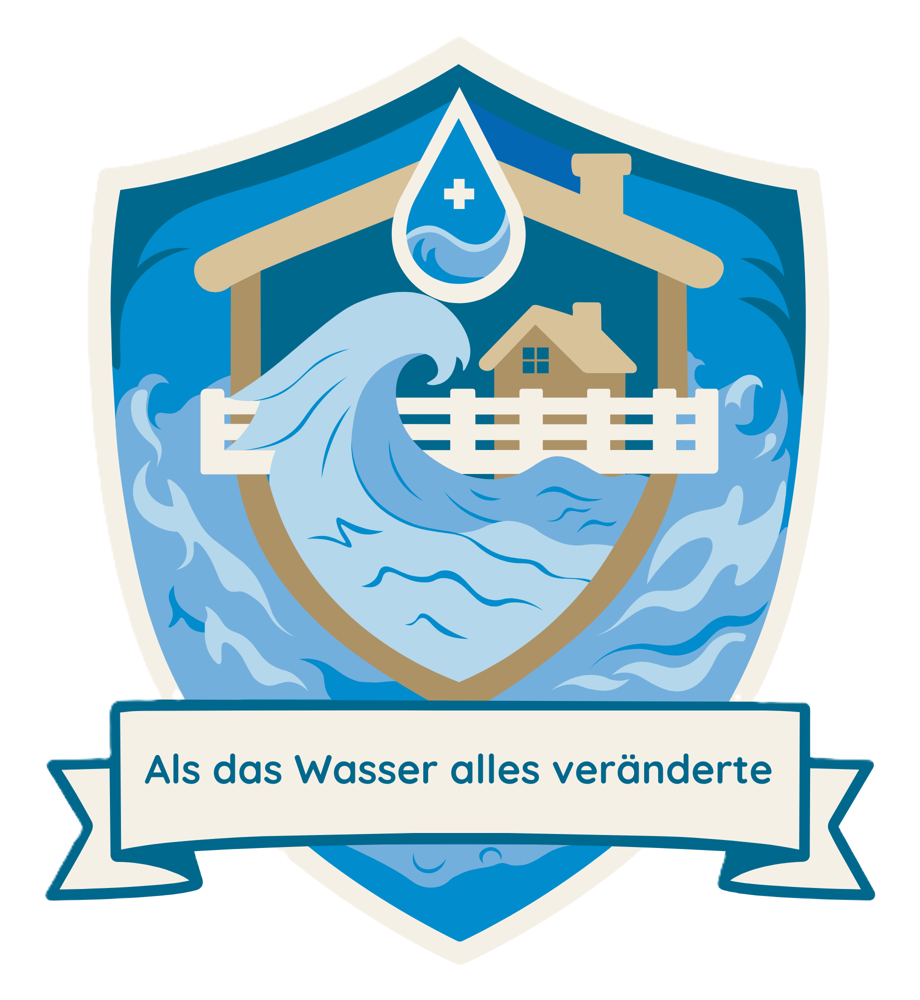
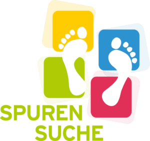

Hier wird später der Einführungstext zum Projekt stehen.
Platzhalter für den Beschreibungstext.
Die Website zum Projekt Spurensuche: "Als das Wasser alles veränderte" wird derzeit entwickelt und getestet.
Einige Inhalte und Funktionen sind möglicherweise noch unvollständig oder werden überarbeitet.